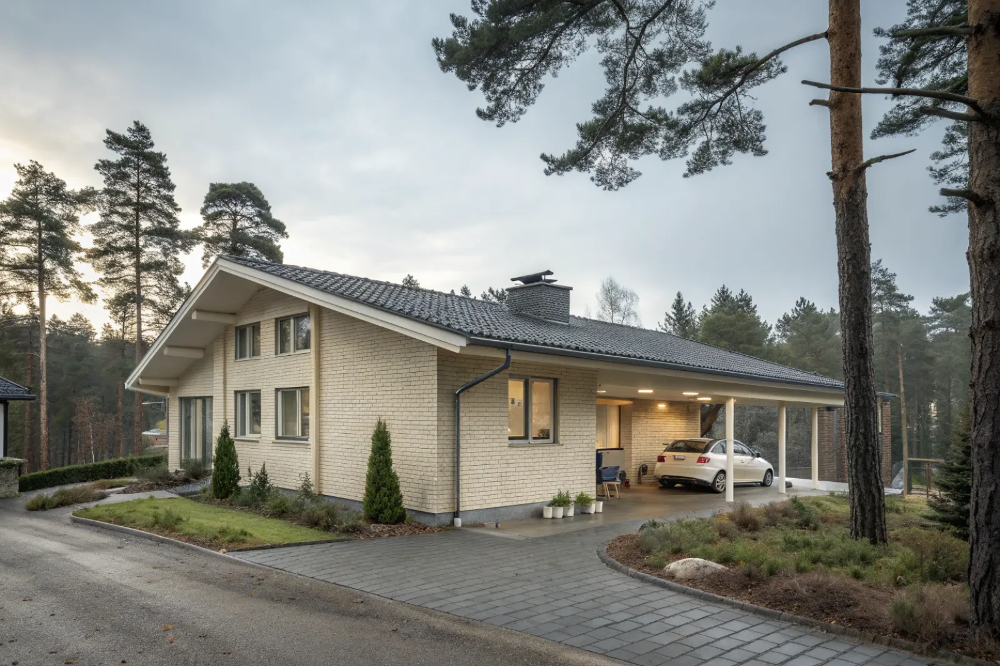

Takbyte i Farsta
Byte av tegel-, betong- och plåttak.
Takbyte i Farsta →Farsta i söderort är mer än ett centrum – här finns villor och radhus i bland annat Sköndal, Fagersjö, Larsboda, Farsta strand, Tallkrogen, Gubbängen och Hökarängen. Vi är takläggare i Farsta för villor, radhus och samfälligheter.
Farsta centrum invigdes 1960 som ett av söderorts ABC-centrum. Runt det byggdes flerbostadshus, men stadsdelsområdet har också stora småhusområden från olika tider.
Sköndal och Tallkrogen har egnahem och villor från 1920–40-talet, ofta med branta sadeltak i tegel eller betong. Fagersjö och Larsboda byggdes ut senare med villor, kedjehus och radhus från 1960- och 70-talet, där betongpannor och låglutande tak dominerar.
Takbehoven skiljer sig därför från kvarter till kvarter. Vi besiktar först och föreslår omläggning, renovering eller byte efter takets faktiska skick.
Oavsett om du behöver ett komplett takbyte eller en riktad renovering ger vi en tydlig bedömning och offert. Vi arbetar även i grannområden – se alla områden vi arbetar i.

Kedjehus och radhus från 1960–70-talet har ofta tak som är original eller lagts om en gång. Pannorna har tappat sin ytbehandling, underlagspappen är spröd och takfotsplåtarna har rostat. Garage och förråd som binder ihop kedjehusen har ofta låglutande papptak som läcker vid anslutningen mot huset.
Många villor ligger nära Drevviken och Magelungen eller i skogsnära lägen, vilket ger fuktigare takytor och mer påväxt. Regelbunden rensning av hängrännor och taktvätt förlänger livet på taket.
När flera kedjehus i samma område byter tak blir etableringen enklare och anslutningarna enhetliga. Prata gärna med grannarna innan du bestämmer dig.
Farsta tillhör Stockholms stad. Sedan 1 december 2025 krävs normalt inget bygglov för att byta takmaterial eller kulör på villor och radhus. Ska taket höjas eller takformen ändras bör du kontrollera med stadsbyggnadskontoret.
Byte av tegel-, betong- och plåttak.
Takbyte i Farsta →Riktade åtgärder som förlänger takets liv.
Takrenovering i Farsta →Bedömning av skick inför beslut.
Takbesiktning i Farsta →Nytt ytskydd på plåttak.
Takmålning i Farsta →Skonsam tvätt och mossbehandling.
Taktvätt i Farsta →Nytt plåttak och plåtarbeten.
Plåttak i Farsta →Vi utgår från Bromma (Mariehäll) och tar uppdrag i hela söderort, däribland Farsta. Vi bokar in besiktning och följer projektet tills taket är klart.
Läs mer om tak på villa eller jämför takbyte och takrenovering innan du bestämmer dig.
Vi arbetar även i Enskede.
Takläggare i Enskede →Vi arbetar även i Älvsjö.
Takläggare i Älvsjö →Vi arbetar även i Huddinge.
Takläggare i Huddinge →Vi arbetar även i Tyresö.
Takläggare i Tyresö →Vi arbetar även i Haninge.
Takläggare i Haninge →